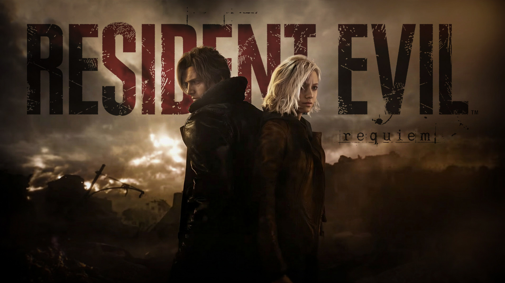

Why Resident Evil Requiem proved Capcom still owns survival horror
October 3, 2026 by Noellee Forbes

Balancing nearly three decades of history while trying to push survival horror forward is no small feat, but Capcom completely nailed it with Resident Evil 9. By splitting the experience between FBI analyst Grace Ashcroft—delivering that slow-burn, resource-starved panic classic fans live for—and Leon S. Kennedy’s high-octane combat against the backdrop of a ruined Raccoon City, the game manages to hit all the right nostalgic notes without feeling like cheap fan service. Whether you're crouching in the dark managing your inventory by the skin of your teeth or taking down hordes of bio-weapons with a clean headshot, it's a impressive reminder of why this series still controls the genre.